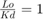
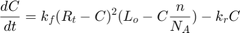

Problem Set 1
Clint Valentine February 6th 2015 Biomolecular Control and Dynamics Prof. Anand Asthagiri
Contents
Phase Portrait of the EGF Receptor-Ligand Interaction
The formation of the complex can be modeled using the equation:
The dissociation of the the complex can be modeled using the equation:

The following code generates a phase portrait for the receptor-ligand interaction interaction of EGF binding to EGF receptor. Fixed points that are stable are labeled with a solid circle. Fixed points that are unstable are labeled with a hollow circle.
Conditions:
warning('off', 'all') % Avoid warnings of imaginary numbers sat = 1; % Lo/Kd eta = 2.0; % (n*Rt)/(Lo*Avagadro) syms u; roots = solve(sat * (1 - (eta * u)) * (1 - u) == u, 'u'); tau = 0:.001:2; y1 = tau; y2 = sat .* (1 - (eta .* tau)) .* (1 - tau); figure; plot(tau, y1, tau, y2, roots(1), roots(1), 'ro',... 'MarkerFaceColor', 'r', 'MarkerSize', 4); axis([0, 1, -1, 2]); axis('on'); grid('on'); h = xlabel('$u$', 'FontSize', 16); set(h, 'Interpreter', 'latex'); h = ylabel('$du/d\tau$', 'FontSize', 16); set(h, 'Interpreter', 'latex'); legend('Dissociation', 'Formation', 'Equilibrium',... 'location', 'northwest'); h = title('Phase Portrait of EGF Binding to EGF Receptor', 'FontSize', 12); set(h, 'Interpreter', 'latex'); strconst = '$\frac{Lo}{Kd} = 1, \eta = 2$'; h = text(0.35, 1.7, strconst, 'HorizontalAlignment', 'left'); set(h, 'Interpreter', 'latex'); xL = xlim; line(xL, [0 0], 'color', 'k'); %x-axis
The phase portrait shown above shows one fixed point for the system in the physical domain. This point is stable because when is of a lesser value than the fixed point, formation of the complex is at a higher rate than dissociation of the complex which drives higher. The opposite is also true. When the value of is greater than the stable point, the rate of dissociation of the complex is greater than the rate of formation of the complex which drives lower.
The stable equilibrium point can be found at:
fprintf('u = %g ', eval(subs(roots(1)))); fprintf('du/dtau = %g\n', eval(subs(roots(1))));
u = 0.292893 du/dtau = 0.292893
Plotting as a Function of and Detecting the Time at 90% EGF Steady-State
This method was my first attempt which failed.
% ode1=@(u, t)sat*(1-eta(1)*u)*(1-u)-u; % ode2=@(u, t)sat*(1-eta(2)*u)*(1-u)-u; % ode3=@(u, t)sat*(1-eta(3)*u)*(1-u)-u; % [u1, t1]=ode45(ode1, 0:0.01:10, 0.1); % [u2, t2]=ode45(ode2, 0:0.01:10, 0.1); % [u3, t3]=ode45(ode3, 0:0.01:10, 0.1);
This was my second attempt and I found a useful solution. The solution to this differential equation can not simply be solved in terms of elementary functions. First, is described symbolically and a solution is found for all values of . The limit as is then found and the differential equation solutions are then solved for 90% the asymptote value.
Conditions:


Kr = 0.12; % units: 1/min eta = [0.1, 1.0, 10.0]; syms u(t); a = dsolve(diff(u,t) == sat*(1-eta(1)*u)*(1-u)-u, u(0) == 0.1); b = dsolve(diff(u,t) == sat*(1-eta(2)*u)*(1-u)-u, u(0) == 0.1); c = dsolve(diff(u,t) == sat*(1-eta(3)*u)*(1-u)-u, u(0) == 0.1); alim90 = 0.9 * limit(a, inf); % Find asymptote and find 90% or 110% blim90 = 0.9 * limit(b, inf); clim90 = 1.1 * limit(c, inf); lim_timea = solve(a == alim90); % Solve tau for 90% asymptote lim_timeb = solve(b == blim90); lim_timec = solve(c == clim90); tau = linspace(0, 3, 10000); % Build tau axis a1 = matlabFunction(a); y1 = a1(tau); b1 = matlabFunction(b); y2 = b1(tau); c1 = matlabFunction(c); y3 = c1(tau); figure; plot(tau, y1, 'm', tau, y2, 'b', tau, y3, 'r'); hold on; plot(lim_timea, alim90, 'r*', 'MarkerSize', 5); plot(lim_timeb, blim90, 'r*', 'MarkerSize', 5); plot(lim_timec, clim90, 'r*', 'MarkerSize', 5); axis([0, 3, 0, 0.6]); axis('on'); grid('on'); h = xlabel('$\tau$', 'FontSize', 16); set(h, 'Interpreter', 'latex'); h = ylabel('$u(\tau)$', 'FontSize', 16); set(h, 'Interpreter', 'latex'); legend('\eta = 0.1', '\eta = 1.0', '\eta = 10.0', '90% steady-state', 'location', 'northwest'); h = title('Fraction of Receptors in Complex', 'FontSize', 12); set(h, 'Interpreter', 'latex');
The following code prints the dimensionalized time at which the system has reached 90% steady-state under the three values of .
fprintf('eta = 0.1, time = %g minutes\n', eval(lim_timea / Kr)); fprintf('eta = 1.0, time = %g minutes\n', eval(lim_timeb / Kr)); fprintf('eta = 10.0, time = %g minutes\n', eval(lim_timec / Kr));
eta = 0.1, time = 8.55714 minutes eta = 1.0, time = 7.07052 minutes eta = 10.0, time = 0.0778756 minutes
Kinetic Models for the Bivalent Receptor Model PDGF
Constants to be considered:
= ligand concentration
= free ligand
= total receptors in cell
= free first valency of receptors
= free second valency of receptors
= total complexes in cell with both valencies filled
The elementary reactions for the system of a monovalent ligand binding to a bivalent receptor are as follows. The assumptions of this system is that both valencies on the receptor have an equal opportunity of binding a ligand
The formation rate of can be modeled using the diff.equation:
Since and are equally likely to bind a ligand we can assume:
Our new rate law becomes:
These mass balances can then be used to put the rate law in terms of the state variable:
Our new rate law becomes:

Non-dimensionalization is achieved with the following equivalencies:
The final bivalent receptor kinetic model for this system is:
Elementary Reactions for a Dimer Ligand and Bivalent Receptor
In these three elementary reactions a dimer is formed and then binds both binding sites in the receptor siultaneously.
In the following example the site of the dimer then binds the site on the receptor. The site of the dimer then binds the site of the receptor forming the complex.
This example is the same as the one above only the domain of the ligand binds the binding site first and then the domain binds the site.